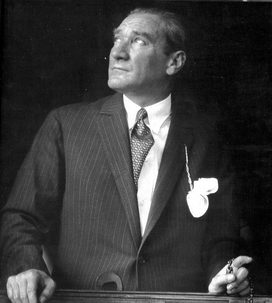

Front-End Developer · UI Designer · Bot Developer
Modern web teknolojileri ve minimalist tasarım disiplinlerini birleştiren, kullanıcı odaklı projeler geliştiren genç bir yazılımcıyım.
İletişime Geç
Ne Yapıyorum
CSS Flexbox ve Grid ile karmaşık arayüz yönetimi. PC, Tablet, Mobil ve TV ekranları için %100 responsive kodlama.
Discord API kullanarak sunucu yönetimi, moderasyon ve kullanıcı desteği odaklı bot geliştirme.
Minimalist estetik, renk teorisi ve kullanıcı yolculuğunu kolaylaştıran sade navigasyon tasarımı.
Çalışmalarım
Kurumsal Web Sitesi
Bir taksi şirketi için geliştirilmiş, yüksek dönüşüm odaklı ve profesyonel landing page. Sadeleştirilmiş kullanıcı arayüzü, mobil öncelikli tasarım ve kurumsal renk paleti uygulaması.
Web Uygulaması
Kullanıcıların zihinsel rahatlamasına odaklanan interaktif bir meditasyon platformu. Nefes egzersizi animasyonları, deniz dalgası ve rüzgar gibi ortam seslerinin entegrasyonu, huzur veren minimalist arayüz.
Discord Botu
Topluluk yönetimi ve sunucu içi yardım süreçlerini otomatize eden özel bir bot. Komut tabanlı yardım sistemleri ve sunucu düzenleme araçları.
Hakkımda
Modern web teknolojileri ve minimalist tasarım disiplinlerini birleştiren, kullanıcı odaklı projeler geliştiren genç bir yazılımcıyım.
Tasarımlarımda sadeliği ve işlevselliği ön planda tutuyorum. Karmaşıklıktan uzak, estetik dengesi yüksek arayüzler tasarlamak temel önceliğimdir.
Hedefim; gelecekte global ölçekte tasarım standartları belirleyen bir Full-Stack Developer olmak ve minimalist tasarımın gücünü dijital dünyada yaygınlaştırmak.
Boş Zamanlar
Konuşalım
Bir proje için iş birliği yapmak ya da sadece merhaba demek istersen bana ulaşabilirsin.